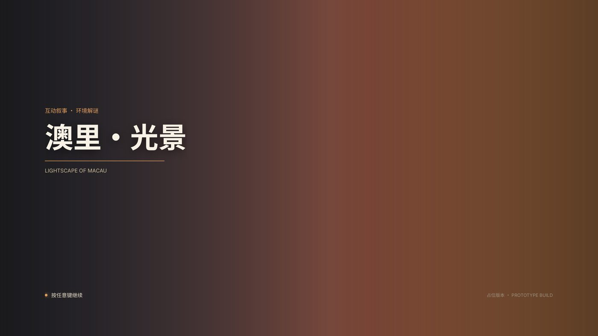
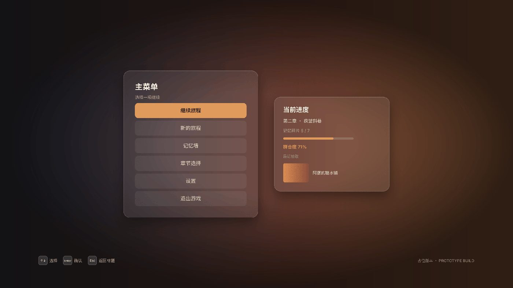
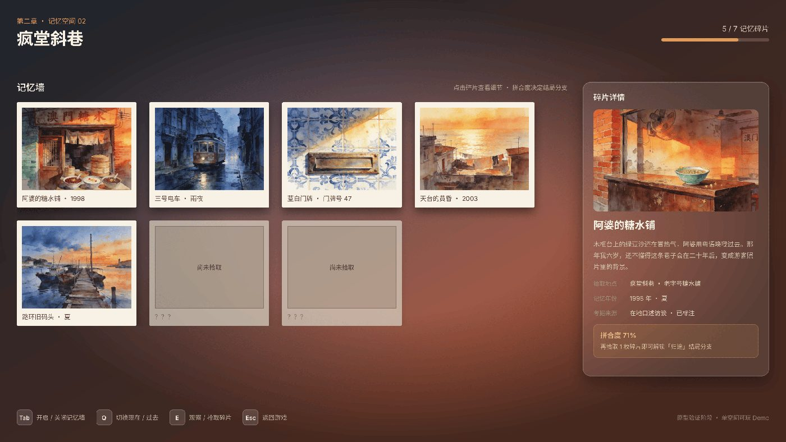
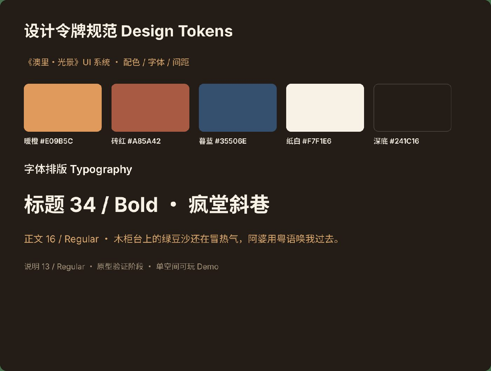
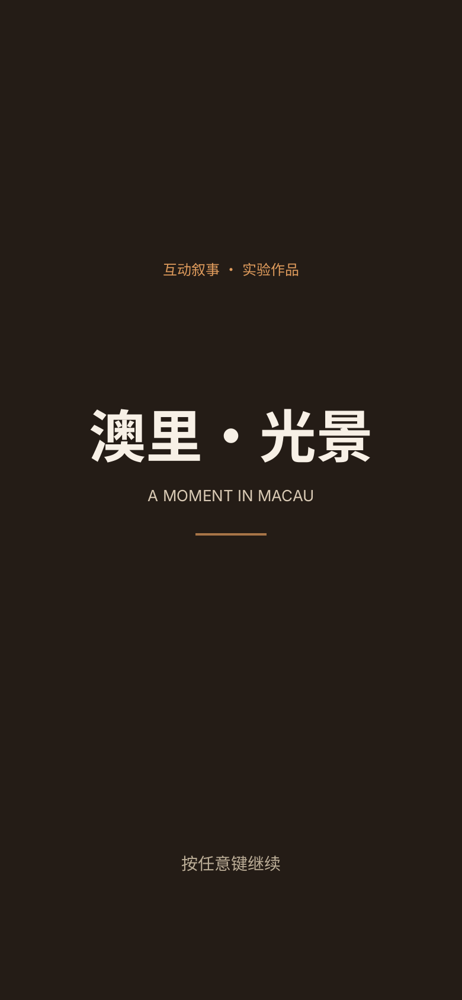
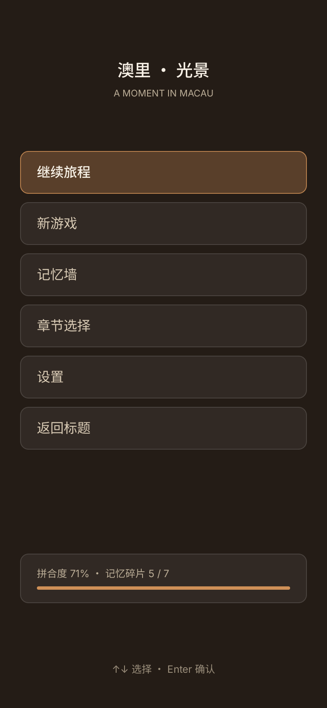
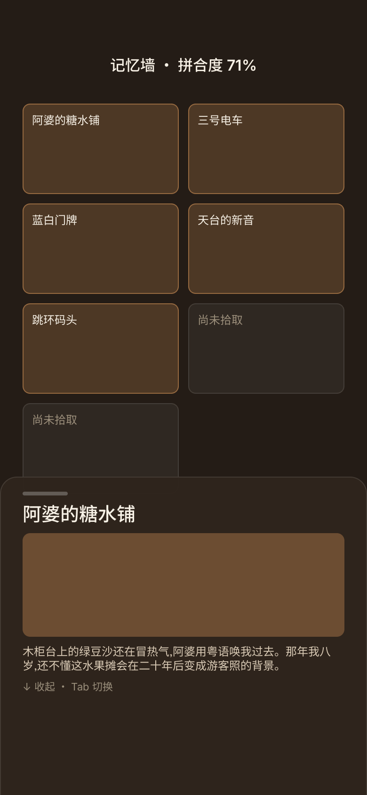
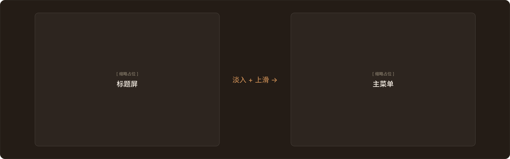
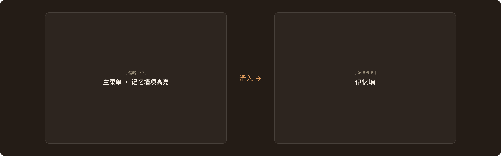
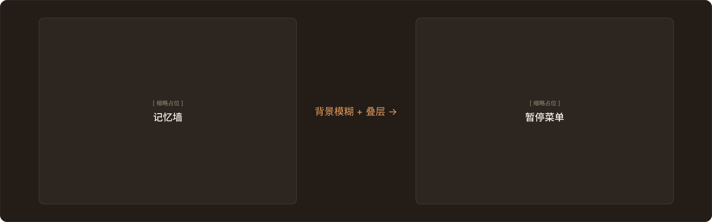

洪 昺 森
互动媒体艺术硕士 · 游戏设计方向
01《澳里·光景》Aoli — 学位作品方向
Unity 开发的氛围探索类游戏。核心不是解谜难度，而是玩家如何在一个没有任务清单的岛城里，靠光、声音与痕迹去理解发生过的事。 已搭建无头仿真、叙事导演与谜题状态机，把游戏当作「可验证的系统」来做——设计决策可以用数据检验，而不是凭感觉。












→ 《澳里·光景》系统架构一页图 （无头仿真 / 叙事导演 / 谜题状态机三层）
02《微光原野》Glimmer Field — 可直接试玩
HTML5 canvas 写的弱目的性氛围原型，是对《澳里·光景》的反向设计：把任务清单、目标箭头、进度条全部拿掉， 玩家只是「随便走的人」。下面这个框可以直接玩——鼠标移动即可，无需安装。
为什么要做这个：它不是一个「对照组」——Canvas 2D 与 Unity 3D 第一人称在媒介、输入、美术上全不同，变量不干净，归因不到「目的性」。
它的正解身份是设计对照案例（design contrast case）：同一作者、同一条自变量轴（目的性／控制权）上的两个极值。
3.91
异光 / 100s（读流取道策略）
2.7×
压过「狂推」策略
220 局
5 档策略 bot × 120s
0 被试
无需伦理审查与设备排队
这套策略仿真把「这样设计到底成不成立」变成了可以跑出来看的数：同样一件作品，有的策略会赢、有的会输， 而赢的那个恰好验证了设计意图。相比依赖眼动仪等生理设备，这条路径不需要被试、不需要实验室排期、成本差一个数量级。
03核心研究问题
一句话：我放进游戏的引导，到底有没有被玩家接到。把两端对起来看—— 设计端（我在系统里记录的设计意图与引导布置）× 玩家端（实际行走路径与行为数据）。
- 弱目的性设计——当游戏不告诉玩家「该干什么」，什么在替它引导注意力：光、声音与痕迹
- 验证路径——优先用行为数据与策略仿真（无需被试、无设备依赖）；眼动等生理测量作为后续可选升级项
- 输入侧探索（工程侧项目）——正在自制 FPC 柔性双 IMU 手势控制器，验证单手非语言输入的可行性